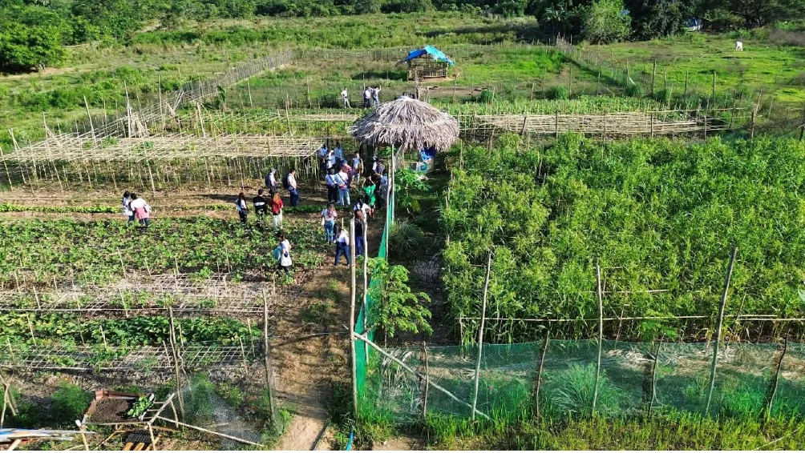
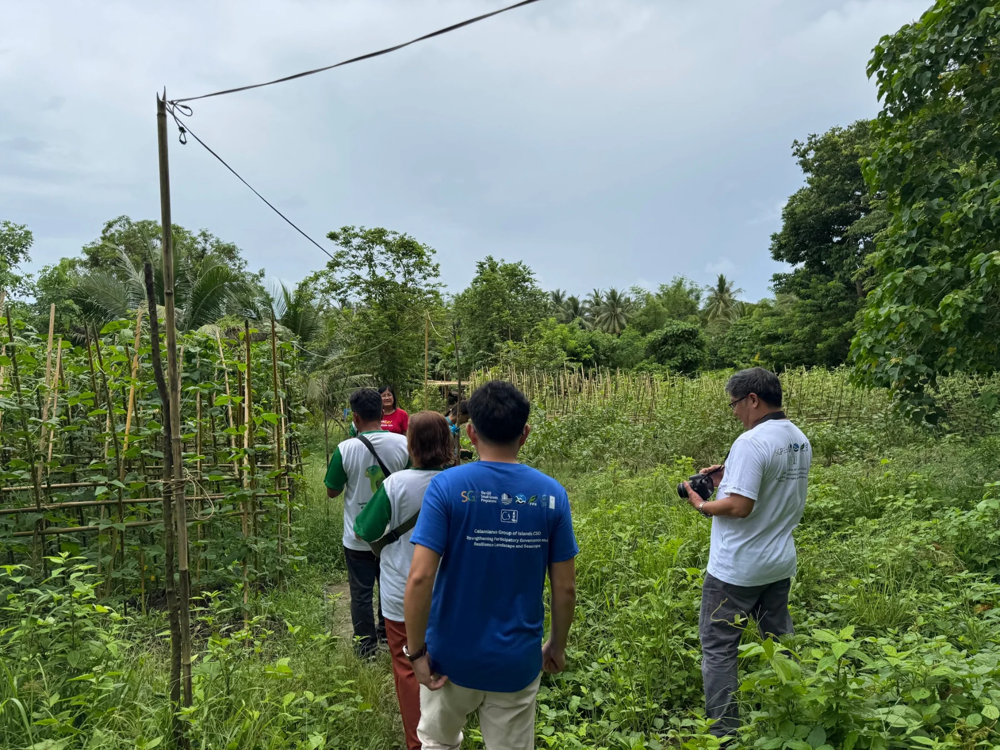
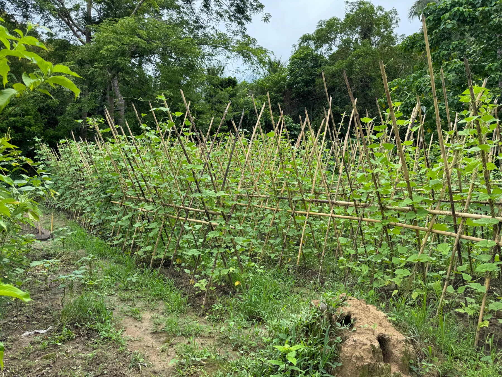
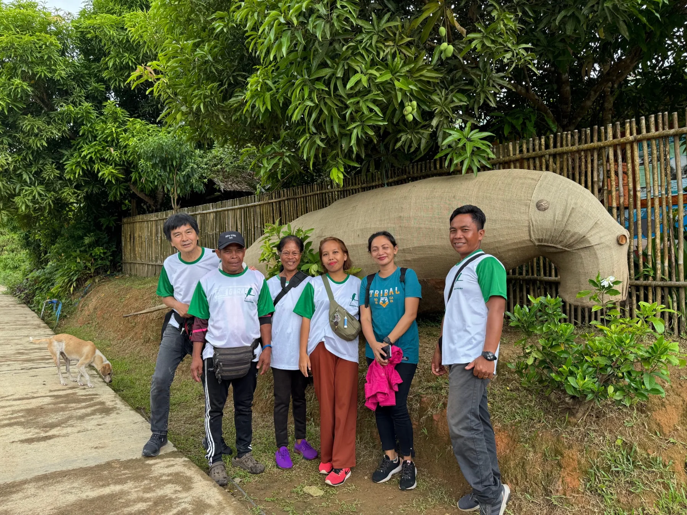
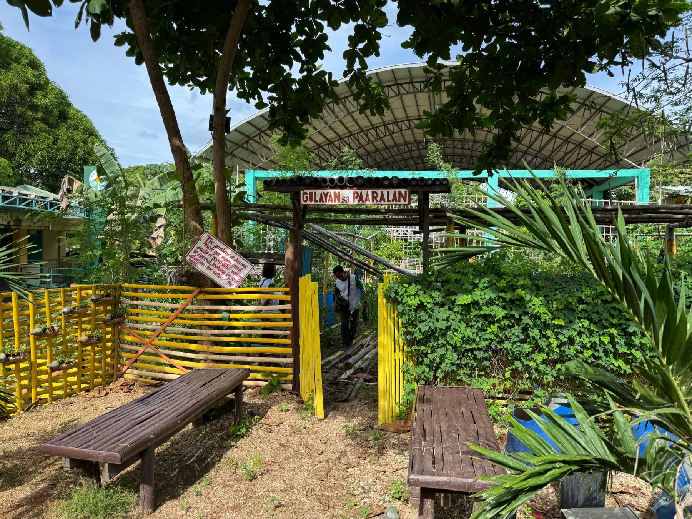
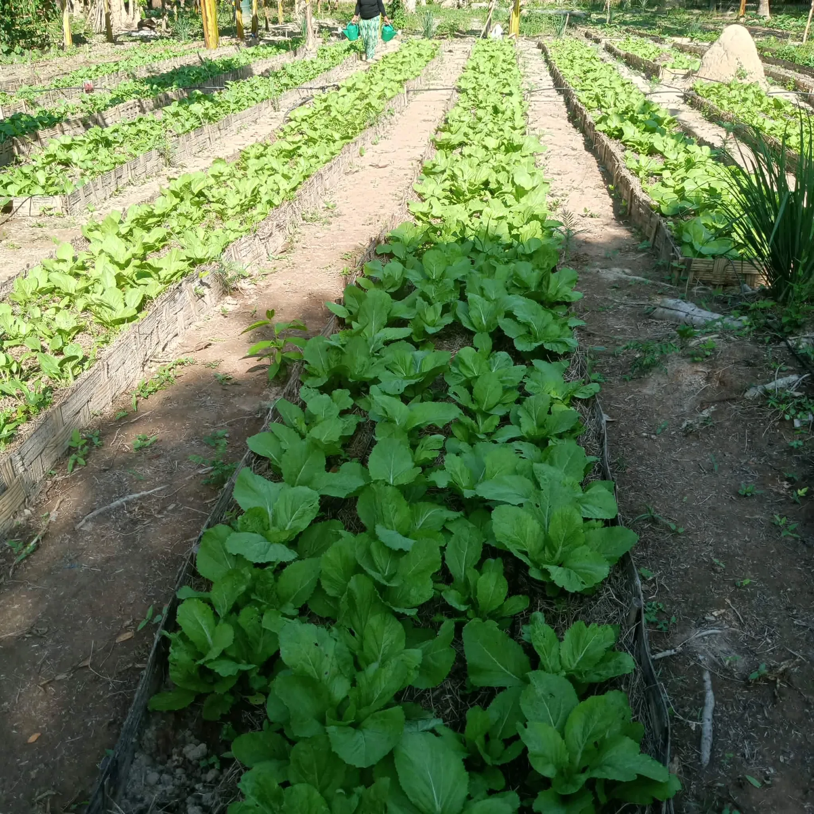
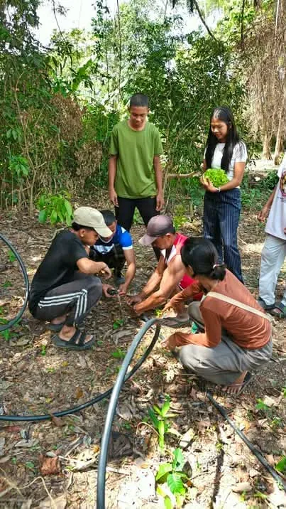
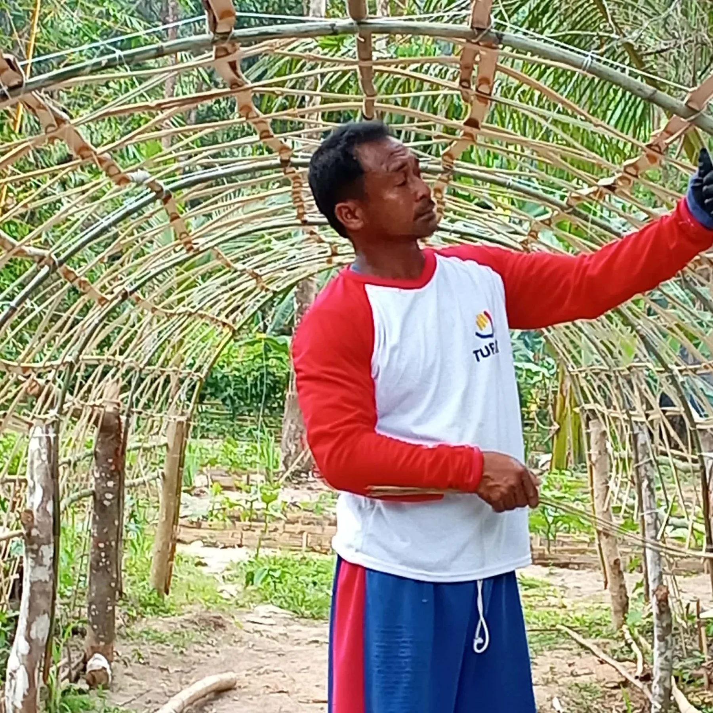

Biodiversity Conservation
Enhancing habitat, native flora, environmental awareness, and appreciation for the biological diversity of the Calamianes.

RnK's work brings biodiversity conservation, regenerative agriculture, education, food security, sustainable enterprise, and community participation into the same system.
RnK works across biodiversity, food systems, learning, and livelihoods because lasting conservation depends on how these areas support one another.
Enhancing habitat, native flora, environmental awareness, and appreciation for the biological diversity of the Calamianes.
Rebuilding soil and supporting food production through composting, intercropping, agroforestry, and careful water management.
Creating practical learning opportunities through school gardens, environmental activities, scholarships, student support, and community education.
Connecting conservation with local ownership, livelihood opportunity, community participation, and practical family nutrition and well-being advocacy.
Across every area: RnK works with schools, universities, local groups, government, technical institutions, and private partners to strengthen knowledge and implementation.
BERAE connects biodiversity, regenerative food production, and sustainable livelihoods within one living landscape.
Biodiversity Enhancement Regenerative Agriculture Enterprise — BERAE — is presented by RnK as a new word for an inseparable concept: biodiversity enhancement, regenerative agriculture, and enterprise. It brings biodiversity, food production, soil health, and sustainable enterprise into one landscape-scale approach, treating farms, forests, waterways, mangroves, communities, and coastal environments as connected parts of a living watershed rather than separate systems.
From acronym to a living word. The framework was formalized as BERAE in a February 2024 RnK proposal to the UNDP–GEF Small Grants Programme. In 2025, Dr. Reyes began using the lowercase word berae to express the idea as a shared practice rather than only a project title. It was introduced publicly during the Sixth Kilit Festival in Malbato on November 12, 2025.
Go beyond protection alone by intentionally strengthening species diversity, habitat quality, ecological function, and the native and endemic life supported by the wider landscape.
Rebuild soil and food systems through regenerative farming, conservation agriculture, agroforestry, organic production, careful water management, and approaches that connect land and aquatic health.
Link ecological stewardship with viable local enterprise, livelihoods, learning, and responsible nature-based experiences.
BERAE looks across urban and community spaces, agriculture, forest, freshwater, and coastal environments to understand how actions in one part of the watershed affect the whole. RnK's current BERAE materials show this approach in practice through regenerative-agriculture work at Kingfisher Park and SHGBEE learning at Malbato Elementary School.
See BERAE in practice
SHGBEE uses school and home gardens as connected spaces for food growing, biodiversity learning, and community participation.
The School plus Home Garden cum Biodiversity Enhancement Enterprise (SHGBEE) approach links practical learning in schools with food production at home and wider community action. Current SGP-supported strengthening work focuses on four K–12 schools.
Explore related training and field storiesGardens become hands-on spaces for environmental education and food growing.
Knowledge moves into household food production and everyday regenerative practices.
Local participation strengthens biodiversity awareness, resilience, and collective ownership.
RnK conducted ocular inspections as part of BERAE application and site assessment work in Busuanga. The visits covered Salvacion National High School, Cheey Elementary School, Western Philippines University and its farm site, and consultations with Cheey barangay leaders and two farmers in Bugtong.
The field visits helped document existing gardens, food-growing areas, landscape conditions, and local practices that could inform how BERAE is applied in different settings.




The network brings together schools, higher education, a community partner, and a conservation landscape across Coron and Busuanga. In Barangay Cheey, CAFA has also provided a site for BERAE practice and implementation.
Selected photographs from the WPU–RAC site document the farm and field setting connected to RnK's BERAE network and training activities.


